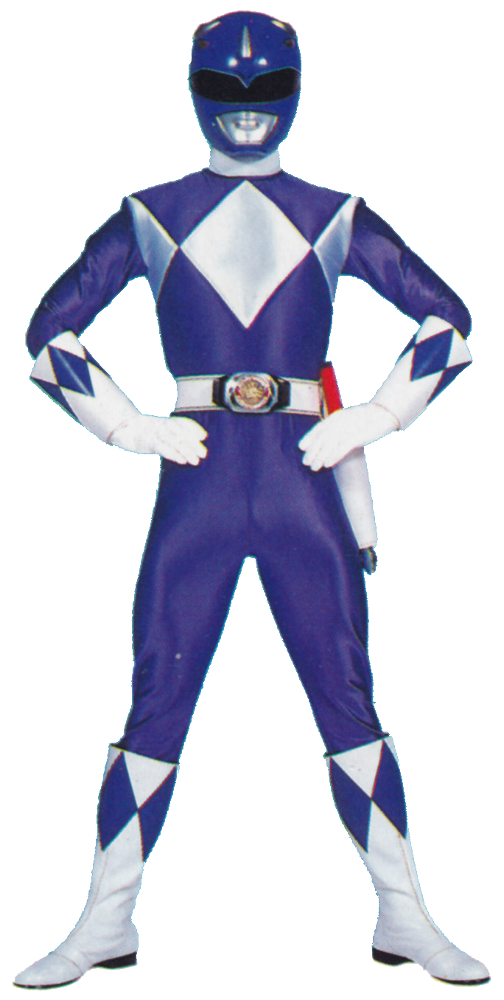
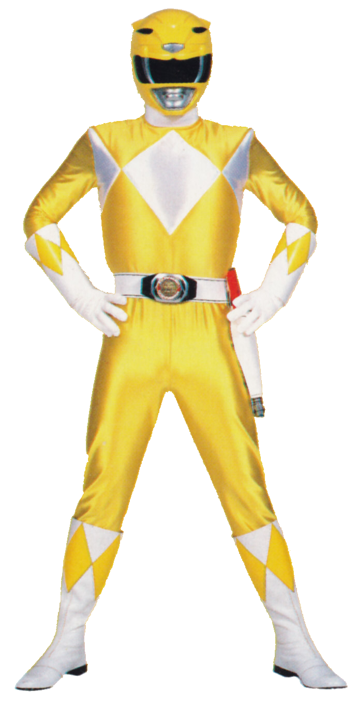
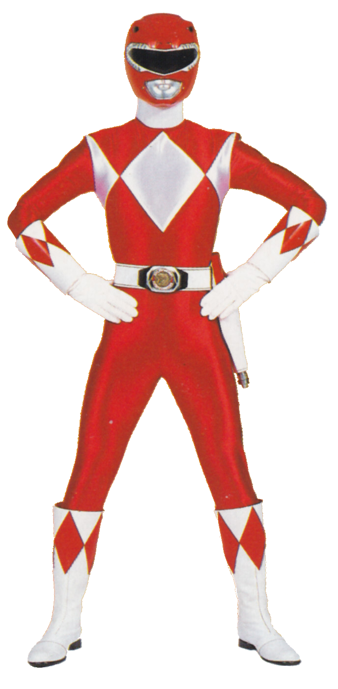
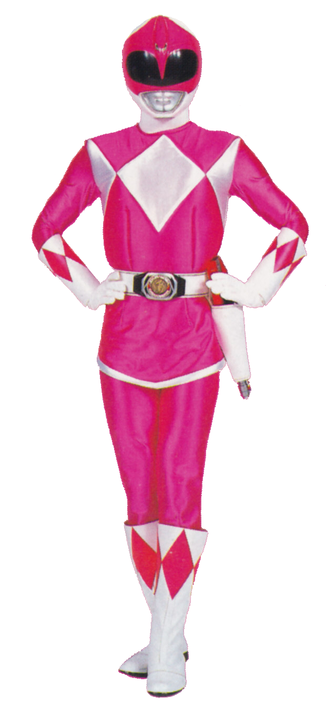

Billy Cranston
Billy é o cérebro da equipe, um gênio em tecnologia e ciência. Embora inicialmente mais tímido, ele se desenvolve como um lutador competente ao longo da série.
Trini kwan
Trini é a mais sábia e equilibrada da equipe, usando sua calma e raciocínio rápido para lidar com as situações. Ela é habilidosa em kung fu e luta com agilidade.
Jason Scott
Jason é o líder original da equipe e o mais corajoso dos Rangers. Sua personalidade forte e habilidades em artes marciais fazem dele um excelente combatente.
Kimberly Ann Hart
Kimberly é a arqueira da equipe e uma das mais ágeis. Ela é gentil, carismática e habilidosa em ginástica, usando essas habilidades em combate e nas lutas acrobáticas.
Zack Taylor

Zack é conhecido por sua personalidade extrovertida e suas habilidades em Hip Hop Kido, uma mistura de dança e luta, que o tornam criativo e dinâmico em combate.